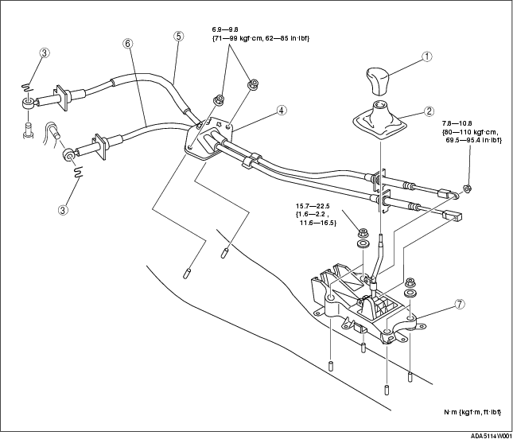

Manual transaxle shift mechanism removal/installation
1. Disconnect the negative battery cable.
2. Remove the battery, battery tray and battery tray bracket.
3. Remove the air cleaner cover. (See INTAKE-AIR SYSTEM REMOVAL/INSTALLATION [ZY].)
4. Remove the console.
5. Remove the rear heat duct. (See REAR HEAT DUCT REMOVAL/INSTALLATION.)
6. Remove the dashboard completely.
(See DASHBOARD REMOVAL/INSTALLATION.)
7. Remove the A/C unit. (See A/C UNIT REMOVAL/INSTALLATION.)
8. Remove the wiring harness of the SAS unit.
9. Remove in the order shown in the figure.
10. Install in the reverse order of removal.
11. After installation, verify that the shift lever can be shifted smoothly into each position.

.
Select Cable Installation Note
1. Make sure that the shift lever (transaxle side) is in neutral.
2. Unlock the lock piece of the select cable (shift lever side) in the order shown in the figure.

3. Shift the shift lever to neutral.
4. Lock the lock piece of the selector cable (shift lever side) in the order shown in the figure, that load will not be applied on the shift lever.

5. Shift the shift lever from neutral to other position, and make sure that there are no other components in that area to interfere with the lever.